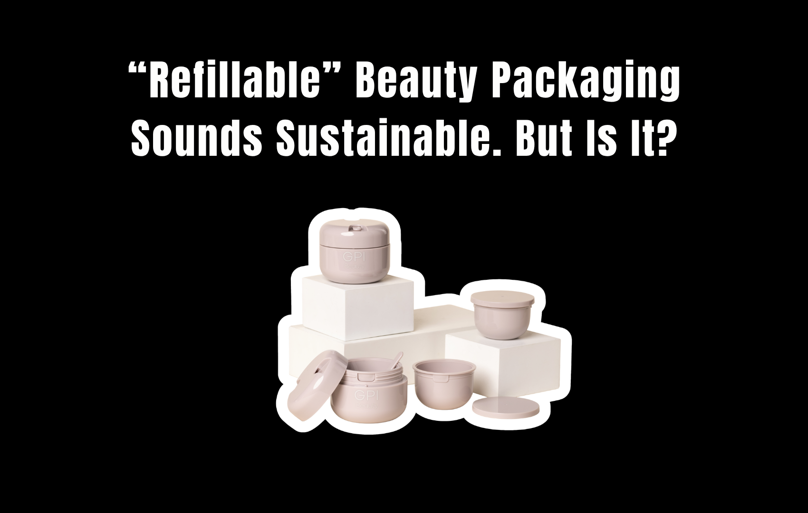
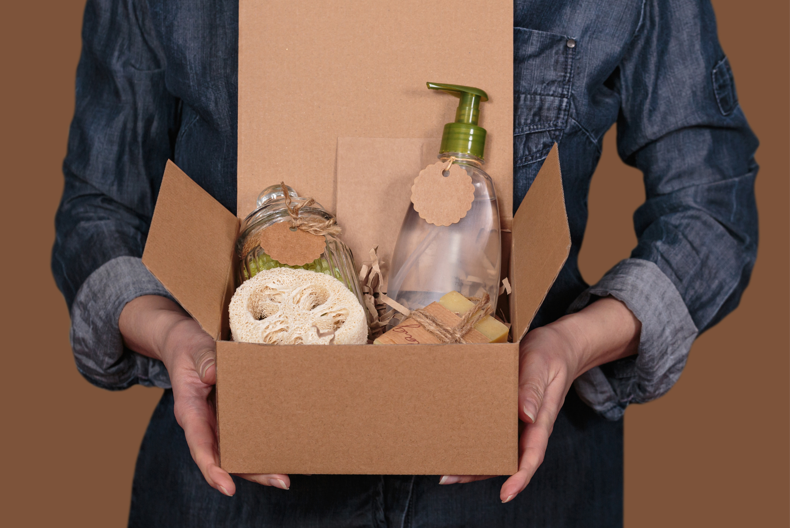

That little “refillable” label looks reassuring.
Less plastic. Less waste. A more sustainable beauty routine.
The implication is pretty clear: buy the bottle once, buy the refill later, and save the planet one moisturizer at a time.
Except there’s a problem.
A refillable package is only more sustainable if you actually refill it. And that part of the equation is almost entirely up to you.
So we looked behind the refill pouch.
The Refillable Packaging Promise
Refillable packaging for beauty products sounds amazing, but what is the reality of their efficacy?
A 2022 study showed that the positive effects of reusable packaging outweighs the positive effects of dematerialization, the process of producing the same amount of product using less materials and energy, by 171%.
Though refillable packaging is great in theory, as shown through the study, a big part of the effects rely on consumer behavior.
That said, not many consumers today actually bring it into fruition.
Brand-loyalty is often not strong enough to retain consumers for refillable packaging to become “worth it.”
The Brand Has to Earn the Refill
Here’s where the sustainability story gets a little more complicated.
Imagine you buy a $60 moisturizer in a beautiful reusable container. You use it for a month. And… you don’t love it.
Maybe the texture isn’t right. Maybe it pills underneath makeup. Maybe you don’t notice the results you expected. Maybe you simply found another moisturizer you like better.
Are you going to spend another $40 on the refill because the original container is technically reusable?
Probably not.
Consumers may think that the product is not good enough for them to purchase refills, for example if a skincare product did not achieve the purpose or satisfy their expectations.
Because, let’s face it. Saving the planet is not a good enough reason for us to rebuy products; we have personal preferences too.
Consumers care about how a product smells, feels, performs, looks on their skin, and whether they actually want to use it again.
A refill system can reduce packaging waste beautifully. But it can’t manufacture brand loyalty. If the original product isn’t good enough to repurchase, the refillable container doesn’t suddenly make it good enough.
With trends nowadays, the person who wants to try every new moisturizer on TikTok is not necessarily the same person who wants to purchase a refill of the moisturizer they already own.
Then Comes the Price Problem
This is where things get awkward for both sides.
Consumers naturally expect a refill to cost less than buying the original product. And honestly, that expectation makes sense.
You’re not buying the fancy outer bottle again. So shouldn’t you pay less?
Ideally, yes.
But from the company’s perspective, the math isn’t always that simple. The actual product still needs to be formulated, manufactured, filled, tested, shipped, and stored. Those costs don’t disappear just because the outer packaging does.
And the refill itself still needs packaging. Sometimes that packaging isn’t cheap.
Plastic alternatives to old packaging can often cost almost 50% more than their original price, deterring companies from choosing sustainability. A refill might require specialized materials, custom shapes, seals, pumps, or components designed to keep the formula stable and hygienic.
So the difference between the original product and the refill isn’t necessarily as dramatic as consumers expect.
Which creates a problem:
Is a Refill Pouch Actually Better?
This is where we need to be careful.
A refill doesn’t automatically equal less environmental impact. The entire system matters.
- How much material is used?
- What is the refill made from?
- Can the packaging actually be recycled where you live?
- How many times will the original container realistically be reused?
And most importantly:
If someone buys a refillable bottle and uses it five times, that’s a very different system from someone who buys it once and never purchases another refill.
The marketing message may be identical. The environmental outcome isn’t.
The Bigger Beauty Problem: Sustainability as a Selling Point
This is where our issue with refillable packaging isn’t that refillable packaging is bad.
It’s that “refillable” can become another beauty marketing badge.
The word itself can make consumers feel like they’ve made the responsible choice before they’ve actually considered how the system works.
But sustainable packaging isn’t determined by the word printed on the box. It’s determined by what happens after you buy it.
- Do you refill it?
- Does the refill actually use less material?
- Can the materials be recovered or recycled?
- Does the packaging survive multiple uses?
- And does the product itself perform well enough that you actually want to buy it again?
Those questions aren’t nearly as pretty on an Instagram post. But they’re much more useful.

So, Is Refillable Packaging Actually Better?
Sometimes.
A well-designed refill system can reduce the need to repeatedly manufacture and discard larger primary packages.
But “refillable” isn’t a magic sustainability button.
The system only works when the packaging is genuinely reusable, the refill makes environmental sense, and consumers continue buying the product. And that’s the part beauty marketing can’t control.
Because ultimately, consumers don’t buy refills because a package tells them they’re supposed to. They buy refills because they liked the product enough to want more.
Maybe that’s the uncomfortable truth behind refillable beauty packaging.
The future of sustainable beauty may not depend entirely on inventing better packaging.
It may depend on making products people actually want to finish. And then buy again.
Sources: Gatt, I. J., & Refalo, P. (2022). Reusability and Recyclability of Plastic Cosmetic packaging: a Life Cycle Assessment. Resources, Conservation & Recycling Advances, 15, 200098. https://doi.org/10.1016/j.rcradv.2022.200098